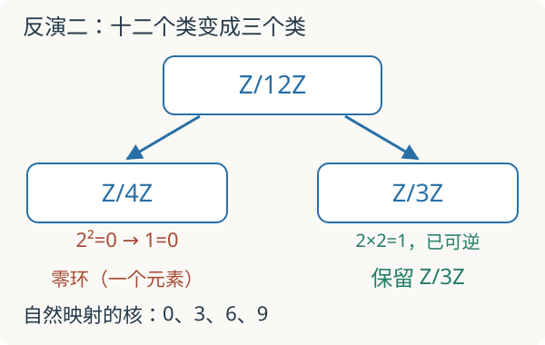

基础衔接 02 · 局部化：允许哪些数作分母
问题：为什么“把一个数变成可逆”会删去某些信息，却保留另一些？先修：模、商与正合、环与域。本讲完成分式的定义、两个有零因子的算例，以及局部环与几何开集的入口。
1. 分数不总是有理数
在 \(\mathbb Z\) 中允许所有非零整数作分母，得到 \(\mathbb Q\)；只允许二的幂作分母，得到 \(\mathbb Z[1/2]\)。后者包含 \(3/8\)，却不包含 \(1/3\)：若 \(1/3=a/2^k\)，便有 \(2^k=3a\)，与素因子分解矛盾。
给含单位交换环 \(R\) 和乘法封闭、包含 1 的集合 \(S\)，局部化 \(S^{-1}R\) 强制 \(S\) 中元素可逆。不是每次都得到域，也不是只保留数轴上一个短区间。这里“局部”的含义来自哪些代数信息在该操作下仍能区分。本讲允许 \(0\in S\)，此时局部化是 \(0=1\) 的零环；有些教材在定义中排除这种退化情形。
2. 为什么交叉相乘还要再乘一个数
如果 \(R\) 有零因子，正确的等价关系是
加法与乘法仍写成 \(a/s+b/t=(at+bs)/(st)\) 和 \((a/s)(b/t)=ab/(st)\)。但不能把上式直接简化成 \(at=bs\)：我们刚允许一些原先不可逆的元素变为可逆，它们杀死的差也应当归零。
在 \(R=\mathbb Z/6\mathbb Z\) 中把 2 变成可逆。原本 \(2\cdot3=0\)，现在乘 \(2^{-1}\) 就得到 \(3=0\)。于是 \(3/1=0/1\)，尽管原环中 \(3\ne0\)。局部化映射 \(R\to S^{-1}R\) 未必单射，“允许更多分母”可能让原本不同的元素合并。
通用性质。 任意环同态 \(f:R\to B\) 若把 \(S\) 中元素都送到可逆元，就唯一延拓为 \(a/s\mapsto f(a)f(s)^{-1}\)。这个条件说明局部化只加入使指定元素可逆所必需的关系。目标环必须满足可逆条件；不能拿一个任意映射就套公式。
3. 手算：十二个剩余类为什么只剩三个
整数模十二的分解
把问题分成两部分。在模四分量里 \(2^2=0\)，若 2 可逆，就有 \(1=0\)，该分量成为零环；在模三分量里 2 本来就可逆，不需要改变。因此
原映射就是模三，核为 \(\{0,3,6,9\}\)。它记录了哪些信息被丢弃。若改为把 5 变成可逆，环完全不变，因为 \(5^2\equiv1\pmod{12}\)。若把 6 变成可逆，由 \(6^2=0\) 得到整个零环。

更一般地，将 \(m\) 中所有与 \(s\) 共享的素因子幂删去，剩下 \(r\)，则 \((\mathbb Z/m)[1/s]\cong\mathbb Z/r\)。理由是逐个素数幂分量检查：\(p\mid s\) 时 \(s\) 在模 \(p^k\) 中幂零，分量消失；\(p\nmid s\) 时 \(s\) 已可逆。这里使用中国剩余定理，且 \(m\) 是正整数。\(r=1\) 对应零环。
先预测：模十二分别反演二、五、六，剩余环的元素数应为多少？默认反演二。
默认结果：剩余模数 3，局部化映射的核有 4 个元素。改变分母许可会改变对象，不能把几个设置当成同一个环的数值误差。
4. 从素理想进入局部环
素理想 \(\mathfrak p\) 的关键性质是 \(ab\in\mathfrak p\) 蕴含 \(a\in\mathfrak p\) 或 \(b\in\mathfrak p\)。因此 \(S=R\setminus\mathfrak p\) 乘法封闭，可以形成 \(R_{\mathfrak p}\)。它的唯一极大理想为 \(\mathfrak pR_{\mathfrak p}\)，所以称为局部环。
对 \(R=\mathbb Z,\mathfrak p=(5)\)，\(\mathbb Z_{(5)}\) 的元素是分母不被五整除的有理数。\(1/2\) 存在，\(1/5\) 不存在。不要与 \(\mathbb Z[1/5]\) 混淆：后者只允许五的幂作分母，规则恰好不同。也不要把 \(\mathbb Z_{(5)}\) 直接叫作五进整数环；完备化是另一项操作。
令 \(\operatorname{Spec}R\) 为素理想集合，基本开集 \(D(f)\) 包含所有不含 \(f\) 的素理想。代数上，研究 \(D(f)\) 对应研究 \(R[1/f]\)。在复数仿射直线上，\(R=\mathbb C[x]\)，\(D(x)\) 去掉闭点 \(x=0\)；\(1/x\) 在那里合法，却不能延伸成整个直线上的正则函数。下一步的层将解释如何在不同开集之间限制和粘合这些函数。
这里给出了仿射概形的入口，而非完整定义与理论。素谱的点不全是普通坐标点，例如 \(\mathbb C[x]\) 的零理想也是素理想，是泛点；把素谱完全画成复平面的普通点会漏掉结构。
5. 两道验收题
题一。 在 \((\mathbb Z/18)[1/3]\) 中，哪些原元素变为零？剩余环是什么？
核对分量与核
\(18=2\cdot3^2\)，删去 \(3^2\) 后得到 \(\mathbb Z/2\)。原映射是模二，因此九个偶数剩余类都进入核。可以直接验证：任意偶数乘 \(3^2=9\) 都被 18 整除。
题二。 令 \(R=\mathbb R[\epsilon]/(\epsilon^2)\)，反演 \(\epsilon\) 会怎样？这是否等于先把 \(\epsilon\) 设为零？
核对两个不同操作
反演 \(\epsilon\) 后，\(\epsilon^2=0\) 两边乘 \(\epsilon^{-2}\) 得 \(1=0\)，所以成为零环。取商 \(R/(\epsilon)\) 却得到 \(\mathbb R\)，两者完全不同。局部化使指定元素可逆，取商使指定元素为零，不能互换。
速查与下一步
| 记号 | 允许的分母 |
|---|---|
| \(R[1/f]\) | \(1,f,f^2,\ldots\) |
| \(R_{\mathfrak p}\) | 所有不在 \(\mathfrak p\) 中的元素 |
| \(\mathbb Z_{(p)}\) | 不被素数 \(p\) 整除的整数 |
下一讲：链复形与同调；几何方向可回到本讲后继续层与粘合。定义、通用性质与零环判据见 Stacks Project：Localization。资料核查：2026-09-08。
继续计算：仿射图粘合与态射。